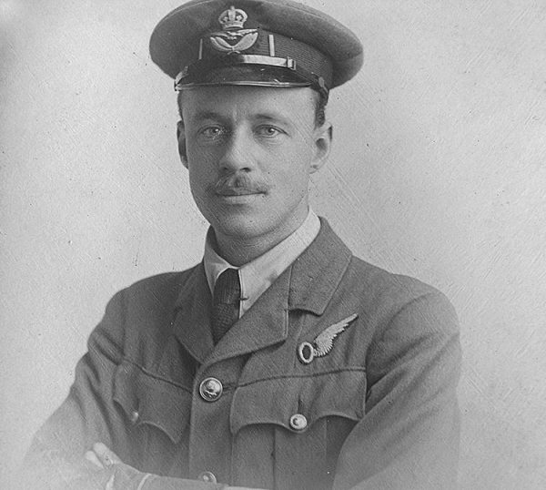

一战时，一个英国士兵，带着鱼竿，穿越枪林弹雨，只是为了给战友们钓一盘美味的鲜鱼
“这个男人身上体现的勇气，就是英国式的执着和古怪的最好结合。”英国鉴宝节目（《巡回鉴宝》（Antiques Roadshow）的主持人一上来就吊起了大家的胃口。 他介绍的这个男人，是一战时的一个英国士兵，一个传奇的钓鱼人。
为什么说他“传奇”？他究竟是个什么人？在此之前，我们先要请出另一个男人——一个收藏家。
自1997年以来开播至今的英国最火鉴宝节目《巡回鉴宝》（Antiques Roadshow）这期迎来了一个叫维克多·伯努多（Victor Bonutto）的人和他收藏的宝贝——一根17英尺（约5.18米）长的网状鱼竿。而这根有着百年历史的鱼竿的主人，正是那个传奇的士兵。
所以，这关于传奇士兵的故事，还得由维克多来讲。
我们的故事要从1888年讲起。
这一年，在英国的约克郡，出生了一个小男孩，爸妈给他取名为约翰·亨利·赫斯特（John Henry Hirst）。这个小男孩从小就对钓鱼展现出了极大地热情和兴趣，在他13岁的时候，他开始写一本记录他所有钓鱼经历的日记。那里是他的天地，记录着1901年至1948年这近四十年来他所有的故事，记载了他带着鱼竿穿越火线，在枪林弹雨的威胁下，跑到索姆河附近钓鱼，只为给战友们带去食物的故事。